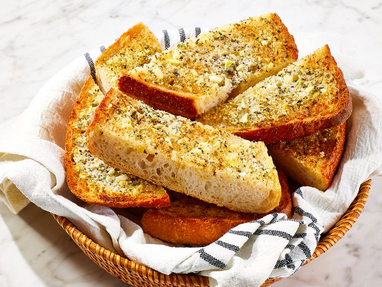

Home
Garlic Bread Spread

Description
This garlic bread spread recipe makes tasty homemade garlic bread that goes great with most Italian dishes. I usually make it with chicken Parmesan. Delicious!
Ingredients
- 1/2 cup butter, softened
- 2 cloves garlic, minced
- 1/4 cup grated Parmesan cheese
- 1/4 teaspoon dried marjoram
- 1/4 teaspoon dried basil
- 1/4 teaspoon fines herbs
- 1/4 teaspoon dried oregano
- 1/4 teaspoon dried parsley, or to taste
- ground black pepper to taste
- 1 loaf unsliced Italian bread
Steps
- Gather ingredients and preheat the oven to 350 degrees F (175 degrees C).
- Mix butter, Parmesan cheese, garlic, marjoram, basil, fines herbs, oregano, parsley, and pepper together in a bowl until thoroughly combined.
- Slice Italian bread loaf in half lengthwise; spread each half generously with the garlic butter mixture. Transfer onto a baking sheet.
- Bake on the top rack of the preheated oven until butter mixture melts and bubbles, about 10 to 15 minutes. Turn on the oven's broiler and broil until the bread is your desired shade of golden brown, 1 to 2 more minutes.